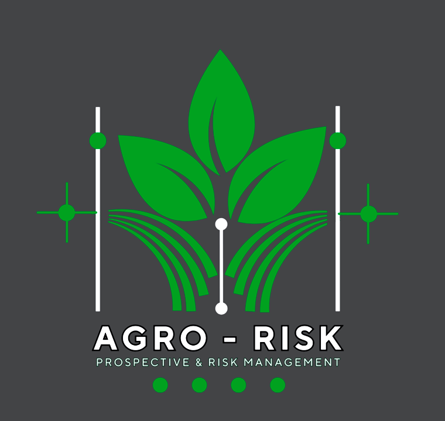

Prospectiva del Riesgo
Perfiles de Riesgo - Indice Captura CO2
|
Media (USD) |
PNE (USD) |
L75% |
OpVar (USD) |
C.As. |
NE |
NNE |
NS |
NVC |
CG (USD) |
CP (USD) |
VCap. (USD) |
CGT (USD) |
Ing. (USD) |
IngOp.(USD) |
TCO2(Ton.) |
| Baseline |
$379.78 |
$825.38 |
$522.18 |
$2,256.92 |
1.8318 |
1,802 |
4,149 |
29 |
0 |
$0.00 |
$0.00 |
$0.00 |
$4,122.30 |
$48,322.22 |
$44,199.92 |
0.00 |
| Level 1.5 |
$286.63 |
$639.00 |
$348.12 |
$2,256.92 |
3.0223 |
2,629 |
3,323 |
29 |
827 |
$2,111.92 |
$4,390.75 |
$2,278.83 |
$5,971.13 |
$50,179.38 |
$46,487.09 |
9.12 |
| Level 2 |
$298.91 |
$698.03 |
$406.19 |
$2,135.17 |
2.0373 |
2,556 |
3,774 |
28 |
754 |
$1,905.31 |
$4,178.65 |
$2,273.33 |
$7,819.95 |
$43,153.77 |
$37,607.15 |
9.09 |
| Level 3 |
$264.95 |
$595.07 |
$339.11 |
$2,202.03 |
2.4992 |
3,397 |
2,856 |
35 |
1,595 |
$4,123.19 |
$8,392.51 |
$4,269.31 |
$11,517.61 |
$50,725.68 |
$43,477.38 |
17.08 |
| Level 4 |
$244.21 |
$632.62 |
$280.93 |
$1,988.84 |
2.4824 |
3,868 |
2,344 |
29 |
2,066 |
$5,289.12 |
$10,990.32 |
$5,701.20 |
$15,215.27 |
$45,953.53 |
$36,439.46 |
22.80 |
La tabla anterior presenta los perfiles de riesgo asociados al índice de captura de CO₂.
Los valores de la primera columna representan los niveles potenciales de gestión del riesgo,
a partir de los cuales se configuran diferentes escenarios de sostenibilidad vinculados
con la captura de CO₂ gracias a una mejor gestión del riesgo. A continuación, se detallan
los valores que conforman la tabla:
Media (USD): Limite superior de las pérdidas esperadas. Media de la distribución agregada de las pérdidas (LDA).
PNE (USD): Promedio de las pérdidas no esperadas de acuerdo con la estructura de la distribución agregada de las pérdidas (LDA).
L75% (USD): Percentil 75% que indica el limite para la transferencia de riesgo de acuerdo con la estructura de la distribución agregada de las pérdidas (LDA).
OpVar (USD): Limite inferior asociado con las pérdidas catastróficas. El Operational Value at Risk, se ubica en el percentil 99,9% de la distribución agregada de pérdidas (LDA).
C.As.: Coeficiente de asimetría que determina la distribución agregada de las
pérdidas (LDA). Se espera que este coeficiente vaya en aumento a medida que los niveles
de gestión van en aumento.
Mayores valores de asimetría se asocian a colas más livianas con menores pérdidas.
CG (USD): Costo potencial de gestión con respecto a las pérdidas no esperadas que evolucionan a pérdidas esperadas en dolares.
CP (USD): Costo potencial de pérdida con respecto a las pérdidas no esperadas que evolucionan hacia pérdidas catastróficas en dolares.
VCap. (USD): Valor Potencial Capturado e indica la diferencia entre los costos CG y los costos CP en dolares.
VCap=(CG-CP)
CGT. (USD): Gestión Total de los eventos de pérdida que conforma la distribución de las pérdidas LDA en dolares.
Ing. (USD): Ingresos asociados con la zona de estudio de acuerdo con la resolución de la rejilla de estudio en dolares.
IngOp. (USD): Ingreso operacional para un año de gestión potencial de riesgos de dolares.
IngOp=(Ing.+VCap.)-CGT
TCO2 (Ton.): Toneladas métricas potenciales de captura de CO2 como resultado de la gestión de riesgos en campo.
Distribución Agregada de Pérdidas